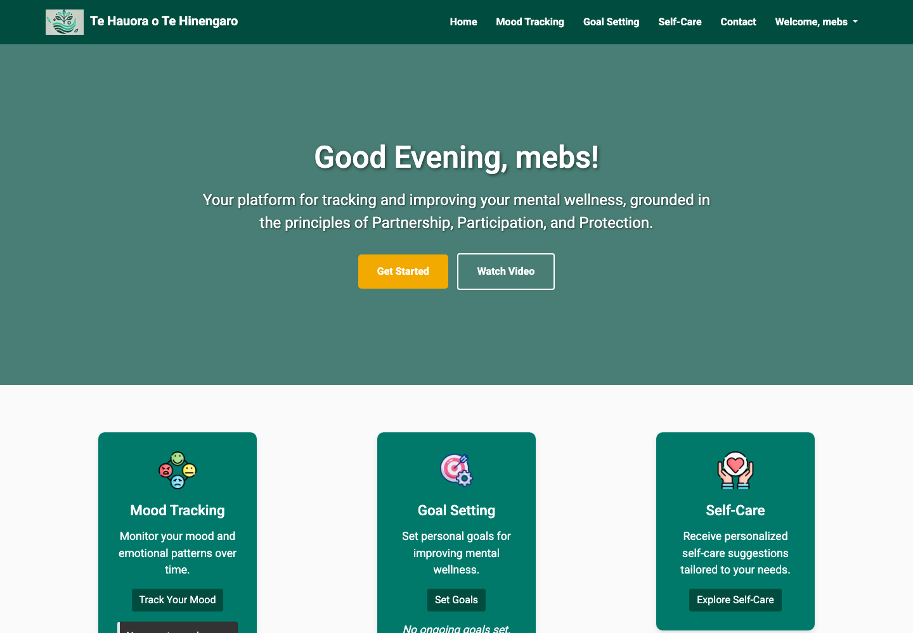

Problem
Wellbeing support tools need to be approachable, private, and practical enough for users to return to regularly.
Software Engineer & Data Analyst
Full-stack wellbeing app
A culture-inclusive wellbeing platform for tracking mood, setting goals, and exploring self-care suggestions through a secure, logged-in experience.

Wellbeing support tools need to be approachable, private, and practical enough for users to return to regularly.
I contributed to the full-stack implementation and user-facing flows as part of a Yoobee College group project.
The app includes authentication, mood tracking, goal-setting, self-care navigation, and a dashboard grounded in Te Tiriti o Waitangi principles.
The project demonstrated a practical, privacy-aware wellbeing workflow with clear feature pathways for users.